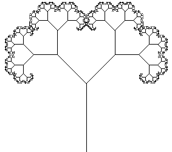
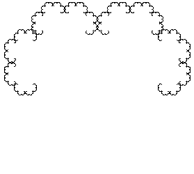

The Sierpinski gasket is one of the simplest fractals: the entire gasket is made of smaller copies of itself.
|
What about the Mandelbrot set? Certainly we should call this a fractal.
And yet it is not made up of smaller copies of itself: The regions painted black in the standard renderings of the Mandelbrot set have no substructure. They are not filled with little Mandelbrot sets.
To understand the sense in which the Mandelbrot set is a fractal, we use a simpler example: a fractal tree.
The tree on the left is not a fractal in the same sense that the gasket is a fractal.
For example, the trunk is not made up of smaller trees.
However, the canopy of the tree, the collection of branch tips pictured on the right, is a fractal.
|  |  |
So the fractal structure of the tree resides in its canopy.
In the same way, the fractal structure of the Mandelbrot set resides in its boundary.
Many natural fractals are fractal in this sense.